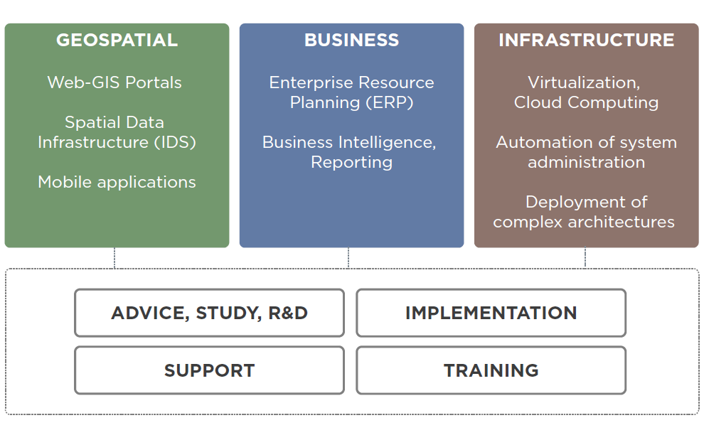

GeoAlchemy
http://erilem.net/talks/pyconfr2015


Éric Lemoine
Python (and Javascript) developer at Camptocamp


Camptocamp

GeoAlchemy
Use SQLAlchemy with Spatial Databases
What's an SQL Spatial Database?
Quoting Wikipedia:
“A spatial database, or geodatabase is a database that is optimized to store and query data that represents objects defined in a geometric space.”
PostGIS
The Spatial Database extender for PostgreSQL
PostGIS
PostGIS provides "spatial" types, functions and operators, and an R-Tree index implementation.
PostGIS Example #1
Create a PostGIS database
$ createdb my-postgis-db
$ psql -c 'CREATE EXTENSION postgis' my-postgis-db
CREATE EXTENSION
PostGIS Example #2
Create a table with a "geometry" column
CREATE TABLE users (
id SERIAL,
name TEXT,
fullname TEXT,
geom GEOMETRY(POINT)
);
CREATE INDEX users_geom_idx
ON users USING GIST ( geom );
PostGIS Example #3
Insert a record with a geometry
INSERT INTO users (name, fullname, geom)
VALUES('pramsey', 'Paul Ramsey',
ST_GeomFromText('POINT(-123 48)'));
PostGIS Example #4
Select users within a distance of a point:
SELECT name FROM users
WHERE ST_DWithin(users.geom, 'POINT(-123 49)', 1);
SQLAlchemy
The Database Toolkit for Python
SQLAlchemy
“The SQLAlchemy SQL Toolkit and Object Relational Mapper is a comprehensive set of tools for working with databases and Python.”
SQLAlchemy Philosophy
- It's not about abstracting/hiding the DB
- It's about Automation
- Instruct SQLA to do the grunt work we give it
- Relational form of data is preserved
- SQLA provides a rich vocabulary to express decisions made by the developer
“The main goal of SQLAlchemy is to change the way you think about databases and SQL!”
SQLAlchemy Architecture
Two parts: SQLAlchemy Core and SQLAlchemy ORM

SQLAlchemy Core Example #1
Define and create tables
from sqlalchemy import (Table, Column, Integer,
String, MetaData, ForeignKey)
metadata = MetaData()
users = Table('users', metadata,
Column('id', Integer, primary_key=True),
Column('name', String),
Column('fullname', String),
)
addresses = Table('addresses', metadata,
Column('id', Integer, primary_key=True),
Column('user_id', None, ForeignKey('users.id')),
Column('email_address', String, nullable=False)
)
metadata.create_all()
SQLAlchemy Core Example #2
Insert records
insert = users.insert().values(
name='jack', fullname='Jack Jones')
conn = engine.connect() # get a connection
result = conn.execute(insert)
user_id = result.inserted_primary_key
SQLAlchemy Core Example #3
Select records
from sqlalchemy.sql import select
s = select([users, addresses]).where(
users.c.id == addresses.c.user_id)
result = conn.execute(s)
for row in result:
print(row['name'], row['fullname'])
SQLAlchemy ORM Example #1
Declare a mapping
from sqlalchemy import Column, Integer, String
from sqlalchemy.ext import declarative_base
Base = declarative_base()
class User(Base):
__tablename__ = 'users'
id = Column(Integer, primary_key=True)
name = Column(String)
fullname = Column(String)
Base.metadata.create_all()
SQLAlchemy ORM Example #2
Add new objects
session = Session()
ed_user = User(name='ed', fullname='Ed Jones')
session.add(ed_user)
session.commit()
ed_user_id = ed_user.id
SQLAlchemy ORM Example #3
Querying
user = session.query(User).join(Address).\
filter(Address.email_address=='jack@google.com').\
one()
GeoAlchemy
Provides extensions to SQLAlchemy for working with Spatial databases
GeoAlchemy History
- GeoAlchemy 1 created in 2009
- Initially PostGIS only
- MySQL, SpatiaLite, Oracle, MS SQL support added in 2009
- GeoAlchemy 2 created in 2012
- Only supports PostGIS!
GeoAlchemy 2
GeoAlchemy 2 actually much simpler, and much easier to use and maintain than the first series.
SpatiaLite and MySQL support still considered.
GeoAlchemy Features
- Supports Geometry, Geography and Raster types
- Supports many PostGIS functions and operators
- Supports custom functions
- Works both with SQLAlchemy Core and SQLAlchemy ORM
- Integrates with Shapely
GeoAlchemy Example #1
Declare a "spatial" table
from sqlalchemy import Column, Integer, String
from geoalchemy2 import Geometry
class User(Base):
__tablename__ = 'users'
id = Column(Integer, primary_key=True)
name = Column(String)
fullname = Column(String)
geom = Colum(Geometry('POINT'))
GeoAlchemy Example #2
Add new "spatial" objects
session = Session()
ed_user = User(name='ed', fullname='Ed Jones',
geom='POINT(90 43)')
session.add(ed_user)
session.commit()
GeoAlchemy Example #3
Querying
users = session.query(User). \
filter(User.geom.ST_DWithin('POINT(90 43)', 1)). \
all()
GeoAlchemy Example #4
Another Querying example
lakes = session.query(Lake).filter(
Lake.geom.ST_Buffer(2).ST_Area() > 33).all()
Integration with other libraries
GeoAlchemy integrates well with other Python tools.
E.g. Shapely, geojson, pyproj, Pyramid (thru Papyrus)
Pyramid GeoJSON Web Service Example
import geojson
from pyramid import view_config
from geoalchemy2.shape import to_shape
@view_config(route_name="users")
def users_view(request):
point_wkt = request.params.get('point')
query = Session.query(User). \
filter(User.geom.ST_DWithin(point_wkt, 1))
features = [{'type': 'Feature',
'geometry': to_shape(user.geom),
'properties': {'name': user.name}
} for user in query]
return geojson.dumps(
{'type': 'FeatureCollection', 'features': features})
Community/Status
- Fully documented: https://geoalchemy-2.readthedocs.org
- Fully tested (on Travis):
- Python 2.6, 2.7, 3.3, 3.4, 3.5
- PostGIS 1.5 and 2
- SQLAlchemy 0.8, 0.9 and 1.0
- 3-4 active developers
- Feel free to join: https://github.com/geoalchemy/geoalchemy2
Thanks!
Slides available at:
http://erilem.net/talks/pyconfr2015